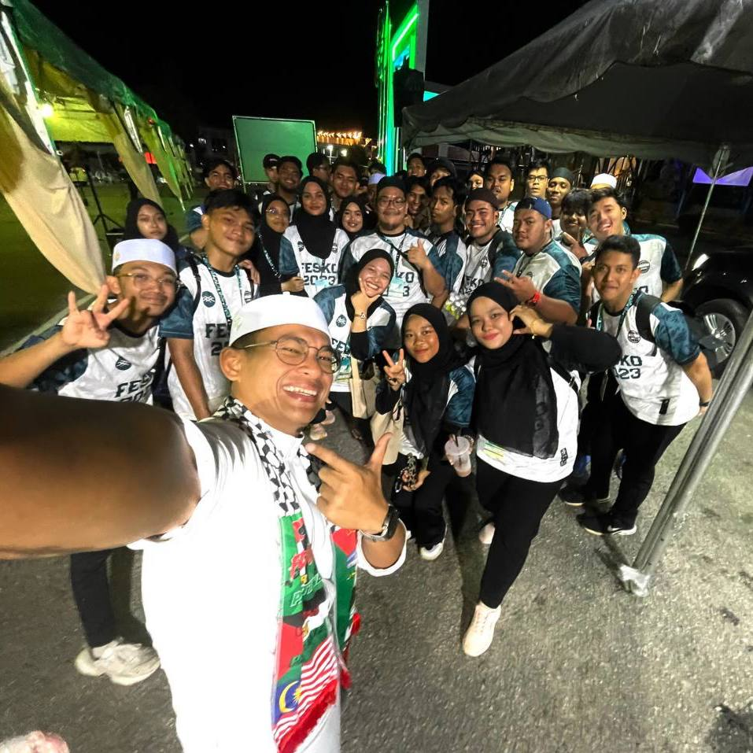

|
|
ZOOMANJI
- The Zoomanji program aims to raise awareness about wildlife conservation and environmental sustainability among participants. Through guided activities and interactive sessions with zoo staff, participants can learn about endangered species, habitat protection, and the role of zoos in preserving biodiversity.
- As part of the i-CSR initiative, Zoomanji encourages participants to actively contribute to Zoo Taiping's operations, such as habitat cleaning, enrichment activities for animals, or assisting in educational programs. This hands-on approach fosters a sense of responsibility and community engagement.
- The program highlights the importance of partnerships between educational institutions, corporations, and community organizations like Zoo Taiping. It serves as a platform for participants to develop teamwork, leadership skills, and stronger connections while contributing to a meaningful cause.
|
|
|
HALAQAH YASIN MINGGUAN 2.0
- The Halaqah Yassin Mingguan program focuses on enhancing participants' spiritual connection through the recitation of Surah Yasin, Surah Al-Mulk, and Qunut Nazilah. This weekly gathering provides a consistent opportunity for participants to reflect on the teachings of the Quran and strengthen their faith.
- By including Qunut Nazilah, the program encourages collective supplication, seeking Allah's protection, guidance, and blessings during challenging times. This practice instills a sense of unity, compassion, and reliance on Allah among participants.
- The weekly program serves as a platform for building a close-knit and supportive community. Through shared recitations and prayers, participants cultivate a sense of brotherhood and sisterhood, promoting positive values and mutual encouragement within the group.
|
|
|
PROJEK 90-AN
- Projek 90-an serves as an entrepreneurship program by involving external vendors to showcase and sell their products or services. This collaboration not only provides vendors with a platform to reach a wider audience but also exposes participants to real-world business operations and entrepreneurial skills.
- The program offers a variety of activities, including a concert, traditional games, henna art, and open mic sessions. These activities cater to different interests, creating a lively and nostalgic atmosphere that engages participants and promotes cultural appreciation.
- By incorporating elements like traditional games and 90s-themed activities, Projek 90-an fosters a sense of community and connection among attendees. The open mic sessions and concert further encourage self-expression and talent showcasing, making the program both meaningful and entertaining.
|
|
|
YASIN FOR FINAL
- Yasin for Final focuses on helping students spiritually prepare for their upcoming final exams by reciting Surah Yasin. The program seeks blessings and guidance from Allah, fostering inner peace and strength during this crucial period.
- By gathering students at Pusat Islam, the program creates a sense of unity and togetherness. It provides a supportive environment where students can encourage one another and collectively seek success through prayer.
- The program emphasizes the importance of balancing academic efforts with spiritual practices. It reminds students to rely on both hard work and prayers, reinforcing the belief that success comes through effort, faith, and reliance on Allah.
|
|

|
AL-BUSYRA FUN RUN
- The Al-Busyra Fun Run is a volunteer-led initiative held at Al-Busyra Mosque, where participants and organizers come together to foster community spirit. The program encourages active participation and teamwork among volunteers to ensure the smooth running of the event.
- The event includes a structured fun run featuring checkpoints along the route. These checkpoints may include water stations, activity spots, or motivational stops to keep participants energized and engaged throughout the run.
- To create an inclusive and family-friendly environment, the program also features kids' activities alongside the fun run. These activities provide entertainment and ensure younger participants have an enjoyable experience, making it a holistic event for all ages.
|
|
|
FESKO 2023
- FESKO 2023 serves as the starting point for entrepreneurial events organized by JPKNR, preceding Projek 90-an. This program sets the tone for fostering business collaborations with external vendors while providing valuable exposure to students in handling real-world entrepreneurial activities.
- FESKO 2023 features a variety of unique activities such as the petting zoo, archery, ramen challenge, and barber challenge. These activities offer entertainment, hands-on experiences, and opportunities for friendly competition, making the program engaging for participants of all ages.
- By combining entrepreneurship with engaging activities, FESKO 2023 not only promotes community interaction but also encourages skill-building. The inclusion of physical challenges like archery and creative contests fosters teamwork, confidence, and a vibrant, lively atmosphere for attendees.
|